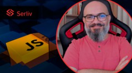

Curso Web Frontend Fundamentos: HTML, CSS e JS + 10 Projetos
Este curso abrangente as principais tecnologias para se tornar um programador ou programadora web front-end: HTML, CSS e Javascript.
Este curso é a escolha perfeita para quem deseja aprender a criar sites modernos e responsivos, com um bom desempenho nos mecanismos de busca e acessibilidade para todos os usuários.
Durante o curso, você terá a oportunidade de aprofundar seus conhecimentos em HTML e CSS, aprender conceitos avançados de semântica, SEO e acessibilidade para garantir que seus sites sejam acessíveis e amigáveis para os mecanismos de busca. Você também aprenderá a criar layouts eficientes e modernos para suas páginas web, utilizando todas as propriedades necessárias do CSS.
Saiba MaisCurso de JavaScript Completo do iniciante ao mestre
Com este treinamento você será capaz de desenvolver seus códigos javascript para sites e sistemas que rodam no browser.
O objetivo é fazer você conseguir desenvolver vários tipos de projetos e módulos como popular uma página usando requisições ajax, validação de formulários, persisitir dados localmente no browser e diversos outros exemplos práticos que vão fazer você pensar como um desenvolvedor front-end de verdade.
Saiba Mais